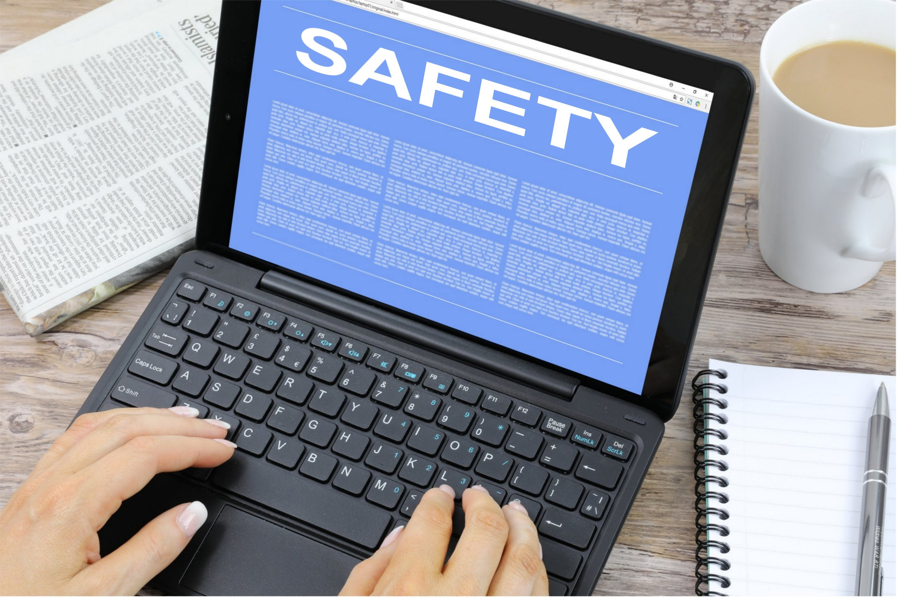

T.V.'s Workplace Safety
Let Us Delve Into The World Of Workplace Safety; Follow Us, For We Shall Guide You In This Journey!
Let Us Delve Into The World Of Workplace Safety; Follow Us, For We Shall Guide You In This Journey!
In the symphony of productivity and innovation that resonates through bustling offices, factory floors, and digital workspaces, a fundamental note cannot be ignored - workplace safety. Imagine a world where employees embark on their professional journeys each day with the assurance that their well-being is a top priority, where the pursuit of growth and success is harmonized with a steadfast commitment to their protection. This is the world that the concept of workplace safety aims to create.
Beyond a checklist, it's a philosophy of preserving human dignity and life's value. It safeguards, guides, and ensures everyone returns home unharmed, if not better. From tech giants' corridors to rugged construction sites, safety remains universal, declaring people as an organization's most prized resource.
But why does workplace safety matter? Its answers span industries: boosted productivity, morale, and public image. In today's rapid news cycle, a company's dedication to employee security shapes its reputation.
Join us as we venture beyond mandates, embracing it as a moral obligation. Welcome to a discourse where productivity and protection unite - a dialogue on organizations' core. Welcome to the world of workplace safety.
Importance of Workplace Safety
Workplace safety is the bedrock of thriving organizations, creating an environment where employees can excel. Its importance is undeniable for several key reasons:


Safety surpasses protocols; it invests in people and progress. Organizations thrive in secure, caring environments, achieving growth, innovation, and success.
General Workplace Safety Measures
First Aid:
Kits: Maintain well-stocked kits, easily accessible and updated.
Training: Encourage CPR and AED training for prompt response.
Contacts: Display emergency contact details.
Fire Safety
Exits: Keep fire exits clear and conduct regular drills.
Extinguishers: Strategically place extinguishers and educate on usage.
Alarms: Test alarms and sprinklers regularly.
Ergonomics
Posture: Educate on proper posture to prevent discomfort.
Furniture: Provide ergonomic chairs and adjustable desks.
Breaks: Encourage regular intervals for muscle relief.
Hazardous Materials
Labeling: Label dangerous materials and provide training.
PPE(Personal Protective Equipment): Supply appropriate protective gear for handling.
Electrical Safety
Inspections: Regularly inspect cords and outlets.
Overloading: Avoid outlet overloads for fire prevention.
Professionals: Call qualified experts for repairs.
Slip and Fall Prevention
Cleanliness: Maintain clutter-free areas.
Signs: Use wet floor signs in spill-prone zones.
Lighting: Ensure adequate lighting to spot hazards.
Personal Security
Control: Enforce access control measures.
Planning: Develop emergency response plans.
Mental Health
Communication: Create a safe space for mental health discussions.
Resources: Offer information on support services.
Safe Lifting
Techniques: Train in proper lifting methods.
Teamwork: Encourage seeking help for heavy objects.
Workplace safety in the IT industry
The Information Technology (IT) industry, characterized by its dynamic and innovative nature, presents a distinct set of workplace safety considerations. While many general safety principles apply, specific areas of concern deserve special attention in the IT sector. Here's a closer look at the necessary and unique safety information for the IT industry:
1. Ergonomics and Workspace Setup:
Monitor Placement: Position monitors at eye level to reduce strain on the neck and eyes.
Ergonomic Keyboards and Mice: Provide ergonomic keyboards and mice to prevent repetitive strain injuries.
Anti-Glare Screens: Use anti-glare screens to minimize eye strain due to prolonged exposure.
Adjustable Furniture: Offer adjustable desks and chairs to allow employees to customize their workstations for comfort.
Why: Poor ergonomics can lead to musculoskeletal disorders and discomfort. Proper monitor placement, ergonomic peripherals, and adjustable furniture promote employee comfort and reduce the risk of repetitive strain injuries.
2. Data Security:
Confidentiality: Emphasize the importance of protecting sensitive data. Train employees to handle data securely and avoid sharing sensitive information.
Password Policies: Implement robust password policies and multi-factor authentication to prevent unauthorized access.
Regular Updates: Keep software and systems updated to patch vulnerabilities that cyberattacks could exploit.
Why: Data breaches can lead to financial loss and reputational damage. Emphasizing data confidentiality, strong passwords, and regular updates minimizes the risk of unauthorized access and data leaks.
3. Cyber-security Awareness:
Phishing Awareness:Educate employees about the risks of phishing attacks and how to recognize suspicious emails or links.
Social Engineering: Train staff to identify and thwart social engineering tactics hackers use to gain unauthorized access.
Remote Work Security: Provide guidelines for maintaining cybersecurity while working remotely, including secure VPN usage and data encryption.
Why: Phishing and social engineering attacks can compromise sensitive information. Educating employees about these threats and remote work security helps prevent breaches and cyber incidents.
4. Electrical Safety:
Power Backup: Ensure IT equipment is connected to uninterruptible power supplies (UPS) to prevent data loss during power outages.
Proper Wiring: Keep cables organized and away from walkways to prevent tripping hazards and electrical accidents.
Why: Power disruptions can lead to data loss and equipment damage. Power backups and proper wiring prevent interruptions and reduce the risk of electrical accidents.
5. Fire Safety and Disaster Recovery:
Data Backups: Regularly back up critical data to secure off-site locations to safeguard against data loss in case of fire or other disasters.
Firewall and Fire Suppression: Install firewalls to prevent unauthorized access and fire suppression systems to protect equipment.
Regular Updates: Keep software and systems updated to patch vulnerabilities that cyberattacks could exploit.
Why: Data loss due to fire or disasters can disrupt operations. Data backups and fire prevention measures ensure business continuity and protect critical information.
6. Cable Management:
Labeling and Organization: Properly label and organize cables to prevent confusion and reduce the risk of accidental disconnections.
Adequate Ventilation: Ensure that cables are not obstructing ventilation pathways, which could lead to equipment overheating.
Why: Disorganized cables can lead to accidents and obstructed airflow. Proper labeling and organization reduce the risk of accidents and maintain equipment efficiency.
7. Chemical and Equipment Handling:
Server Room Safety: Establish strict access controls to server rooms, as they often house sensitive and potentially hazardous equipment.
Proper Cleaning: Train staff on using appropriate cleaning agents for IT equipment to prevent damage and potential health risks.
Why: Sensitive and hazardous equipment must be handled with care. Strict access controls and proper cleaning protocols prevent damage, accidents, and potential health risks.
8. Mental Health Support:
Digital Detox: Encourage employees to take regular breaks from screens to prevent digital eye strain and promote mental well-being.
Remote Work Balancing: Support remote workers in maintaining work-life balance to prevent burnout and promote mental health.
Regular Updates: Keep software and systems updated to patch vulnerabilities that cyberattacks could exploit.
Why: Long screen exposure and remote work stress can impact mental health. Encouraging breaks and supporting work-life balance enhance employee well-being and productivity.
Fatalities: There were 5,333 fatal workplace injuries in the U.S. in 2019, according to the Bureau of Labor Statistics.
Leading Causes: The leading causes of workplace injuries and fatalities include falls, struck by object accidents, electrocutions, and caught-in/between accidents.
Industries with High Risks: Construction, manufacturing, agriculture, and transportation are some of the industries with higher risks of workplace accidents.
Workplace Injuries: Workplace Injuries: In 2020, there were approximately 2.8 million non-fatal workplace injuries reported in the United States.
Lost Workdays: On average, a work-related injury or illness leads to 8 days away from work in the U.S.
Project Lead
Front End Developer/Backend Developer
Front End Developer/Backend Developer
Front End Developer/Backend Developer
Front End Developer/Backend Developer